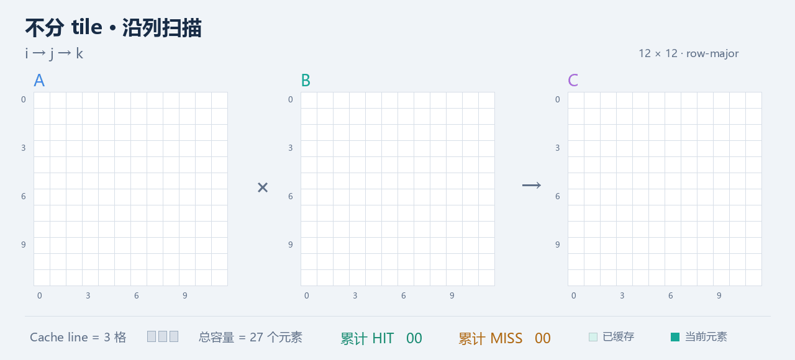
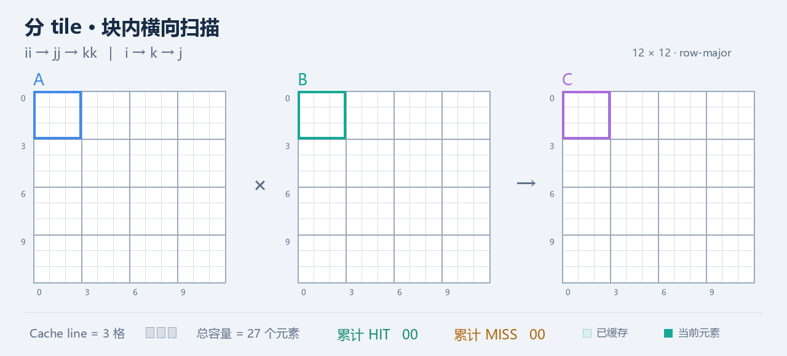

Tiled GEMM¶
GEMM 算法在 GPU/NPU 处理器上运行时，常常采用 tile/分块矩阵乘法的手段进行处理，例如矩阵乘法 [1024×1024]×[1024×1024] ，往往会被拆解成 16×16 或者 32×32 的这种小型 tile。处理由于处理器本身 Core 无法支持这么大之外，还存在着 Cache miss rate 可以降低的主要原因。
tile 降低 Cache miss，并不是因为“小矩阵天然更容易算”，而是因为它改变了数据访问顺序，从而显著提高了 temporal locality（时间局部性） 和 spatial locality（空间局部性）。
I. 朴素 GEMM 的访存¶
假设我们要计算矩阵乘法 \(C=A\times B\)，其中\(A,B,C\in \mathbb{R}^{1024\times1024}@\mathrm{FP32}\)，每个元素 4 Byte。
于是单个矩阵大小：\(1024^2\times4=4\text{ MB}\)，三个矩阵就是约 12 MB。显然，这远大于一个 Core 的 L1 Cache，更不用说寄存器了。
最直观的实现是：
for (int i = 0; i < N; i++)
for (int j = 0; j < N; j++)
for (int k = 0; k < N; k++)
C[i][j] += A[i][k] * B[k][j];
计算一个 \(C_{ij}\) 时：
也就是读取：
- A 的第 \(i\) 行；
- B 的第 \(j\) 列。
假设矩阵采用最常见的 row-major 内存布局。
那么 A 的访问：
在内存里是连续的。
但 B 的访问：
相邻两次地址差：\(1024\times4=4096\text{ Byte}\)
也就是说，每次跨 4 KB。如果 Cache Line 是 64 Byte，那么一次从内存加载：B[k][j], B[k][j+1], ..., B[k][j+15]
一共 16 个 FP32 进入 Cache line。
但当前计算 \(C_{ij}\) 时你只需要：B[k][j]，剩下 15 个数据虽然一起进入 Cache，却暂时没用。这就是第一个问题——空间局部性利用很差。
假设现在算：
需要访问：
每次加载 B[k][0] 时，实际上整个：B[k][0:15] 都会被装进 Cache Line。理论上以后算：\(C_{0,1}\) 时就可以利用刚才顺便载入的：B[k][1]
问题是，从 B[k][0:15] 被加载进入 Cache line 到真正使用B[k][1]，中间隔着整整一次完整的 K=1024 遍历，或者说，已经加载了一次完整的 \(B[0:1023][0:15]\) 矩阵进入 Cache 空间——而我们实际上，只使用了第一列的数据\(B[0:1023][0]\)。
\(B[0:1023][0:15]\) 大小为：
$\(1024\times16\times4=65536\text{ Byte}=64\text{ KB}\)$，
而 L1 Cache 可能也只有几十 KB，是相同的数量级。
于是很有可能：等程序终于想使用 B[0][1] 时，之前包含 B[0][0:15] 的 Cache Line 很可能已经被驱逐。
所以即使：
物理上明明在同一条 Cache Line 中，程序却没有及时利用这种局部性。
这就是一个非常典型的：reuse distance 太长。
Example
可以参考如下动图了解这一过程，该图生动地呈现了因为被加载进入 cache line 的数据没有被及时利用而导致的 Cache miss 的情况。
本案例中：矩阵乘法维度为：\([12\times 12]\times [12 \times 12]=[12\times 12]\)，计算时按照常规的 \(i \rightarrow j \rightarrow k\) 访问模式。Cache line = 3 格数据，Cache 总容量为 27 格数据。

II. Tiled GEMM¶
Tile 做的事情，就是强迫程序“趁热用掉”。
现在我们把矩阵切成 \(16\times16\) 的小块。
即令：
- A tile : 16×16
- B tile : 16×16
- C tile : 16×16
每一次先计算：
例如 A[0:15][0:15] 与 B[0:15][0:15] 相乘，累加到 C[0:15][0:15](partial)。然后 A[0:15][16:31] 与 B[16:31][0:15] 相乘，继续累加到同一个 C[0:15][0:15]。
因此整个 C[0:15][0:15]
实际上是：
这里发生了根本性的变化。
P1: Tile 具有更小的 Working Set¶
FP32 情况下：
所以：A_tile = 1 KB, B_tile = 1 KB, C_tile = 1 KB
概念上的 Working Set 只有大约：\(3\text{ KB}\)
相比整个矩阵：A=4 MB, B=4 MB, C=4 MB，一下子从 MB 级降到了 KB 级。
因此 A_tile 和 B_tile 被放入：
- CPU L1 Cache；
- GPU Shared Memory / L1；
- NPU Local SRAM；
- Register File；
之后，在计算完成之前，它们基本不会被别的数据挤出去。
这就是为什么 blocking 可以显著减少 capacity miss。
P2: Tile 可以被更好地复用¶
考虑 \(16\times 16\) 的矩阵乘法。
为了计算：
总共需要：\(16\times16\times16=4096\) 次乘加。但需要加载的 A、B 元素只有 \(16\times16+16\times16=512\)个。
计算强度显然相比不划分 tile 更优。例如 A[0][0] 这个元素，并不是只用于一个 C 结果，它会参与 C[0][0]~C[0][15] 总共 16 次 MAC；同理，B[0][0] 也会参与 C[0][0]~C[15][0] 总共 16 次 MAC。
所以每个输入元素被加载进片上高速存储后：
而不是：DRAM读一次，MAC一次，然后扔掉（上述朴素 GEMM 访存中案例的做法）
这才是 tiled GEMM 性能提升最核心的地方。
P3: Blocking 同时改善两种局部性¶
blocked GEMM 通常会把循环写成这样的结构
概念上：
for (ii = 0; ii < N; ii += T)
for (jj = 0; jj < N; jj += T)
for (kk = 0; kk < N; kk += T)
for (i = ii; i < ii + T; i++)
for (k = kk; k < kk + T; k++) {
float a = A[i][k];
for (j = jj; j < jj + T; j++)
C[i][j] += a * B[k][j];
}
注意最里面：
访问：
连续。
同时：
只读取一次，然后：
一个 A 元素连续使用 16 次。
所以这段循环本身就在明确表达：把 A/B 放进高速存储，然后最大化 reuse。
因此通常会说程序有两种 locality。
Spatial Locality——空间局部性¶
访问了 B[k][0] 后，立即访问：B[k][1], B[k][2]...B[k][15]，这些恰好处于连续内存。
例如 64 Byte Cache Line + FP32：64/4=16。
一次 Cache Line fetch 得到的 16 个 FP32 可以全部消费，而不是只使用其中一个。
Temporal Locality——时间局部性¶
例如 A[i][k]
加载后，会用于：C[i][0], C[i][1]...C[i][15] 同一个数据短时间内使用 16 次。
因此：
- 第一次：miss → load
- 后面：hit → hit → hit → ...
这就是 temporal reuse。
Example¶
我们依旧考虑第 I. 节使用的例子，这一次采用划分 tile 的方式：
Example
矩阵乘法维度为：\([12\times 12]\times [12 \times 12]=[12\times 12]\)，按照 \(3\times3\) 划分 A, B, C tile。计算时按照的 \(i \rightarrow k \rightarrow j\) 访问模式。Cache line = 3 格数据，Cache 总容量为 27 格数据。

III. 更多实际情况¶
3.1 对于 GPU，应该是“减少 Global Memory Traffic”¶
对于 GPU，严格地说我们经常不应该只说：Tiling 降低 Cache miss。
更准确的是：Tiling 减少 Global Memory Traffic。
因为 CUDA GEMM 往往不会完全依赖硬件 Cache。
典型流程是：
比如一个 Thread Block：
- 从 Global Memory cooperative load 一个 A tile；
- 从 Global Memory cooperative load 一个 B tile；
- 存入 Shared Memory；
- 所有 threads 反复消费这些 tile；
- 做大量 FMA；
- 再加载下一批 tile。
所以 Shared Memory 实际上相当于：
软件显式管理的 Cache。
3.2 实际 GPU GEMM 往往不是“只有一级 16×16 tile”¶
这是很值得注意的一点。我们看到的 Tensor Core 的 \(16\times 16\)，不一定代表整个 GEMM 只被切成 16×16。
实际高性能 GEMM 通常采用：Hierarchical Tiling
比如可能是：
1024 × 1024 GEMM
↓
Thread Block tile
128 × 128
↓
Warp tile
64 × 64
↓
Tensor Core / MMA tile
16 × 16 × 16
↓
Register fragment
不同层级对应不同存储层次：
矩阵整体
│
HBM / DRAM │ 1024×1024
↓
────────────────────────────────
L2
│
↓
Thread Block Tile
128 × 128
│
Shared Memory │
↓
Warp Tile
64 × 64
│
Register File │
↓
MMA Tile
16 × 16 × 16
│
Tensor Core ↓
FMA
于是每一级 tiling 都解决不同层次的数据复用问题。
可以把它理解成：DRAM reuse → Shared Memory reuse → Register reuse → MAC reuse
这也是现代 GEMM kernel（cuBLAS、CUTLASS 等）结构复杂的根源。
IV. Summary¶
其中最重要的不只是“tile 可以降低 Cache miss”这一结论，而是这两个词：
理解了这两个概念，后面再看 GPU 的 Shared Memory Tiling、Register Tiling、Warp Tiling，以及 NPU 的 Local Buffer / Systolic Array Dataflow（Weight Stationary、Output Stationary 等），逻辑其实就是同一条线：怎样让昂贵地搬进来的数据在片上尽量多复用。